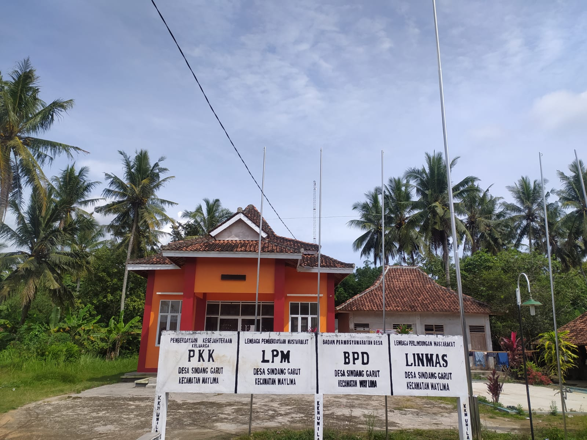
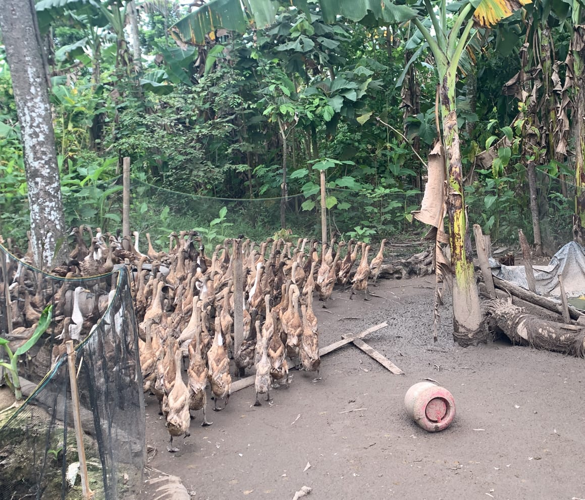
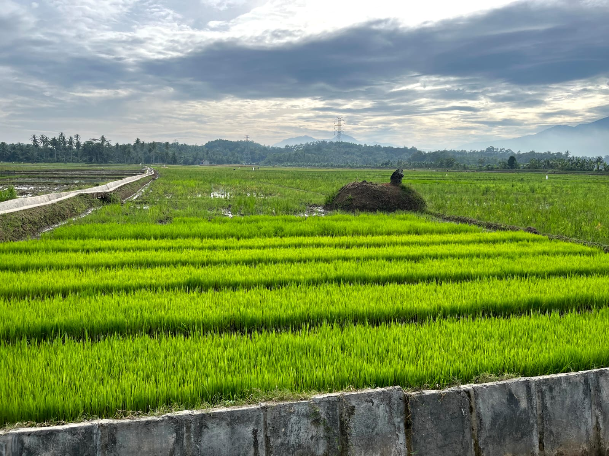
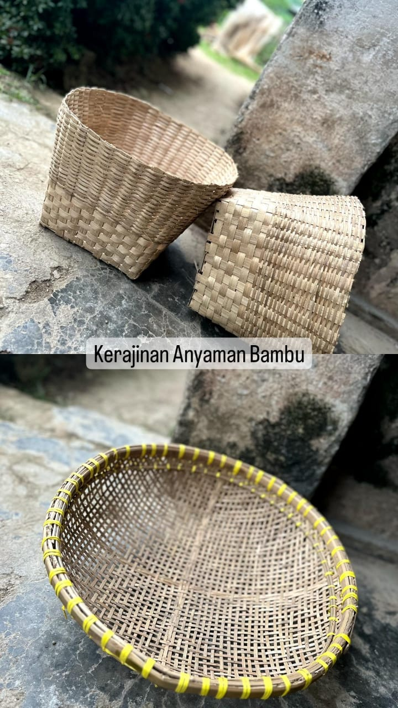
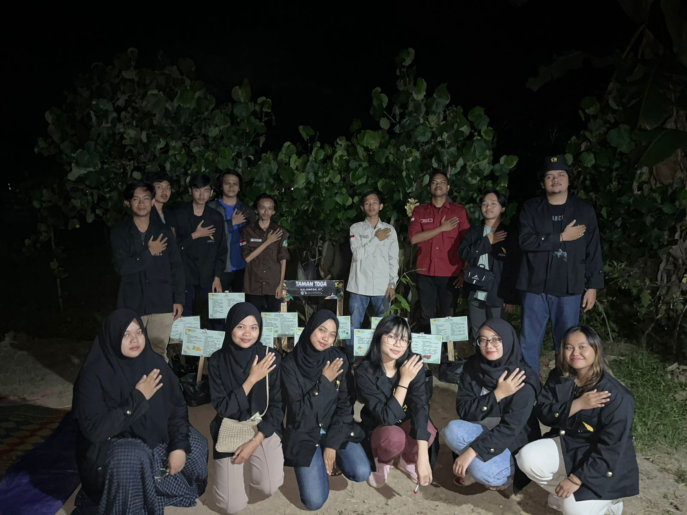
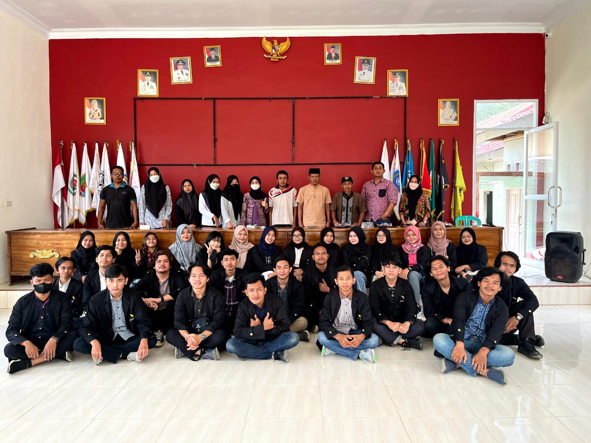

Profil Desa Sindang Garut

Gambar Balai Desa Sindang Garut
Desa Sindang Garut adalah satu dari 16 Desa di Wilayah kecamatan way Lima yang terletak 1 Km kearah Barat dari Kota Kecamatan serta memiliki 5 dusun 12 RT dan mempunyai luas wilayah seluas 265,5 Ha.
Adapun Batas Desa Sindang Garut adalah Sebagai berikut :
Sebelah Utara berbatasan dengan Desa Wates Kecamatan Gading Rejo Kabupaten Pringsewu, Sebelah Selatan berbatasan dengan Desa Baturaja dan Desa Gunung Rejo Kecamatan Way Lima Sebelah Timur berbatasan dengan Desa Paguyuban Kecamatan Way Lima Kab. Pesawaran.
Iklim Desa Sindang Garut, sebagaimna Desa-desa lain di wilayah Indonesia mempunyai iklim musim panas dan penghujan, hal tersebut mempunyai pengaruh langsung terhadap pola tanam yang ada di desa Sindang Garut kecamatan Way Lima.
Potensi Desa Sindang Garut
Potensi yang dimiliki desa Sindang Garut antara lain yaitu Pengrajin rumah tangga, seperti anyaman bambu, gula aren, batu bata dan perabot rumah tangga lainnya. Selain itu, di bidang pertanian yaitu padi, kopi cokelat dan terdapat usaha ternak bebek di dusun 5 yang menghasilkan 1 Kartu Keluarga dapat mencapai kurang lebih 7000 ekor bebek.
1. Penghasil Batu Bata
Berikut link penjelasan terkait kualitas batu bata sindang garut :
Klik Disini

2. Peternak Bebek
3. Pertanian Padi
4. Pengrajin Bambu
Data Jenis Kelamin Penduduk
Berdasarkan grafik di atas, dari total penduduk sebanyak 1.115 orang. Mayoritas penduduknya adalah laki-laki yaitu sebanyak 574 orang dan perempuan sebanyak 541 orang.
Data Usia Penduduk
Berdasarkan grafik di atas, telah kita olah usia penduduk dengan rentan 1 sampai 10 tahun, 11 sampai 20 tahun, dan seterusnya. Untuk rentan umur 1-10 tahun ada sebanyak 172 orang, pada rentan umur 11-20 tahun ada sebanyak 193 orang, pada rentan 21-30 tahun ada sebanyak 163 orang, pada rentan umur 31-40 tahun ada sebanyak 180 orang, pada rentan 41-50 tahun ada sebanyak 160 orang, pada rentan umur 51-60 tahun ada sebanyak 133 orang, pada rentan 61-70 tahun ada sebanyak 75 orang, pada rentan umur 71-80 tahun ada sebanyak 28 orang, pada rentan 81-90 tahun ada sebanyak 9 orang, dan pada rentan 91-100 tahun ada sebanyak 1 orang. Sehingga mayoritas usia penduduk di Desa Marga Agung yaitu pada rentan 11-20 tahun.
Data E-KTP
Berdasarkan diagram di atas, masyarakat desa sindang garut sebagian besar sudah memiliki E-KTP sebanyak 766 orang. Sedangkan, yang belum memiliki sebanyak 348 orang.
Data Status Perkawinan
Berdasarkan grafik di atas, memberikan informasi terkait status perkawinan yang berada di desa sindang garut dengan kriteria belum nikah sebanyak 511 orang, Kawin/Nikah sebanyak 543 orang, Cerai Hidup sebanyak 12 orang, dan Cerai Mati sebanyak 48 orang. MAka, mayoritas dari data tersebut yaitu sudah menikah atau kawin sebanyak 543 orang.
Data Penghasilan PerBulan
Berdasarkan data di atas dapat memberikan informasi terkait penghasilan masyarakat sindang garut dengan kriteria belum berpenghasilan sebanyak 754 orang, kurang dari 350 ribu sebanyak 36 orang, 350-700 ribu sebanyak 87 orang, 700-1,5 juta sebanyak 139 orang, 1,5-2,5 juta sebanyak 74 orang, dan lebih dari 2,5 juta sebanyak 24 orang.
Untuk data lengkapnya, bisa klik dibawah ini :
Data Penduduk Sindang GarutInstagram KKN ITERA Sindang Garut
Dokumentasi Kegiatan
 Peta Desa Sindang Garut
Berikut peta dari lokasi Desa Sindang Garut, Kec. Way Lima, Kab. Pesawaran.